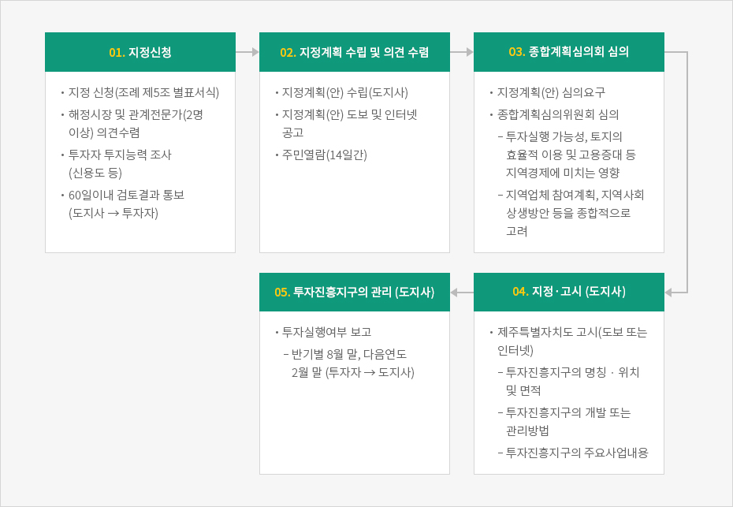

투자진흥지구
- Home
- 투자환경
- 지원제도
- 투자진흥지구
제주 투자진흥지구
제주에 투자하는 국내외 자본에 대해 차별 없이 지원하는 제주특별자치도만의 투자 인센티브입니다. 제주의 핵심산업을 육성하기 위한 세제 감면 혜택과 공유 재산 특례 적용 등 다양한 혜택을 제공하며, 제주 투자가가 희망하는 제주 지역 어디든지 지정이 가능합니다.지구의 유형
투자진흥지구는 개별형과 단지형으로 나누어집니다. 개별형은 투자가가 희망하는 제주 지역 어디든지 지정이 가능하며 27개 업종만 지정이 가능합니다. 단지형은 개발사업시행자가 유원지시설 또는 지구단위계획이 결정된 지역 토지의 2/3 이상을 확보한 경우, 단지 내 입주한 27개 업종 기업 대상 지정이 가능합니다.개별형 투자진흥지구
지정조건
총 투자 금액 2,000만 달러 이상- 관광 호텔업, 수상 관광 호텔업, 한국 전통 호텔업(카지노업, 보세판매장 제외), 종합 휴양업, 전문 휴양업(골프장업, 휴양콘도미니엄업 제외), 관광 유람선업, 관광 공연장업, 종합 유원시설업, 국제회의 시설업, 관광 식당업
- 문화산업, 노인복지시설업, 청소년수련시설업, 궤도사업, 정기생산업, 교육원(연수원)
- 자율학교, 국제고등학교, 외국교육기관, 국제학교
- 의료기관(의원, 치과의원, 한의원, 조산원 제외)
- 첨단기술활용산업, 보건의료기술 연국개발사업‧연구개발서비스업, 식료품‧음료제조업, 마리나산업, 화장품제조업, 연구개발업
단지형 투자진흥지구
지정조건
총 투자 금액 1천억 원 이상- 개발사업시행자가 유원지시설의 결정 또는 지구단위계획의 결정이 있는 지역 토지의 2/3 이상 소유권 또는 사용권을 확보하는 경우, 개별형과 동일한 27개 업종을 대상으로 지정이 가능합니다.
투자진흥지구 인센티브
국세 감면
- 법인세와 소득세 3년간 면제, 다음 2년간 50% 감면
- 개발 사업 시행자 법인세·소득세 3년간 50% 감면, 다음 2년간 25% 감면
- 지정일부터 3년 이내 대상 사업 직접 사용을 위해 수입한 자본재 관세 면제
지방세 감면
- 지방세 지정일(단지형은 최초 부동산 취득일) 이후 5년까지 취득세 면제
- 지정일(단지형은 최초 납세 의무 성립일)부터 10년간 재산세 면제
각 종 부담금 감면
- 개발 부담금, 공유수면 점·사용료 면제, 농지보전부담금, 대체초지조성비, 대체산림자원조성비 50% 감면, 하수도원인자부담금 15% 감면
지정 절차


-
01. 지정신청
- 지정 신청(조례 제5조 별표서식)
- 해정시장 및 관계전문가(2명 이상) 의견수렴
- 투자자 투지능력 조사 (신용도 등)
- 60일이내 검토결과 통보 (도지사 → 투자자)
-
02. 지정계획 수립 및 의견 수렴
- 지정계획(안) 수립(도지사)
- 지정계획(안) 도보 및 인터넷 공고
- 주민열람(14일간)
-
03. 종합계획심의회 심의
- 지정계획(안) 심의요구
- 종합계획심의위원회 심의
- 투자실행 가능성, 토지의 효율적 이용 및 고용증대 등 지역경제에 미치는 영향
- 지역업체 참여계획, 지역사회 상생방안 등을 종합적으로 고려
-
04. 지정·고시 (도지사)
- 제주특별자치도 고시(도보 또는 인터넷)
- 투자진흥지구의 명칭 · 위치 및 면적
- 투자진흥지구의 개발 또는 관리방법
- 투자진흥지구의 주요사업내용
- 제주특별자치도 고시(도보 또는 인터넷)
-
05. 투자진흥지구의 관리 (도지사)
- 투자실행여부 보고
- 반기별 8월 말, 다음연도 2월 말 (투자자 → 도지사)
- 투자실행여부 보고

지정 이후
지정 이후에는 제주특별자치도가 투자진흥지구 투자계획에 따라 이행상황을 관리를 합니다.
투자진흥지구 지정자는 투자실행여부를 반기별(8월말, 2월말)로 제주특별자치도에 보고를 해야 합니다.
투자진흥지구 지정자는 투자실행여부를 반기별(8월말, 2월말)로 제주특별자치도에 보고를 해야 합니다.